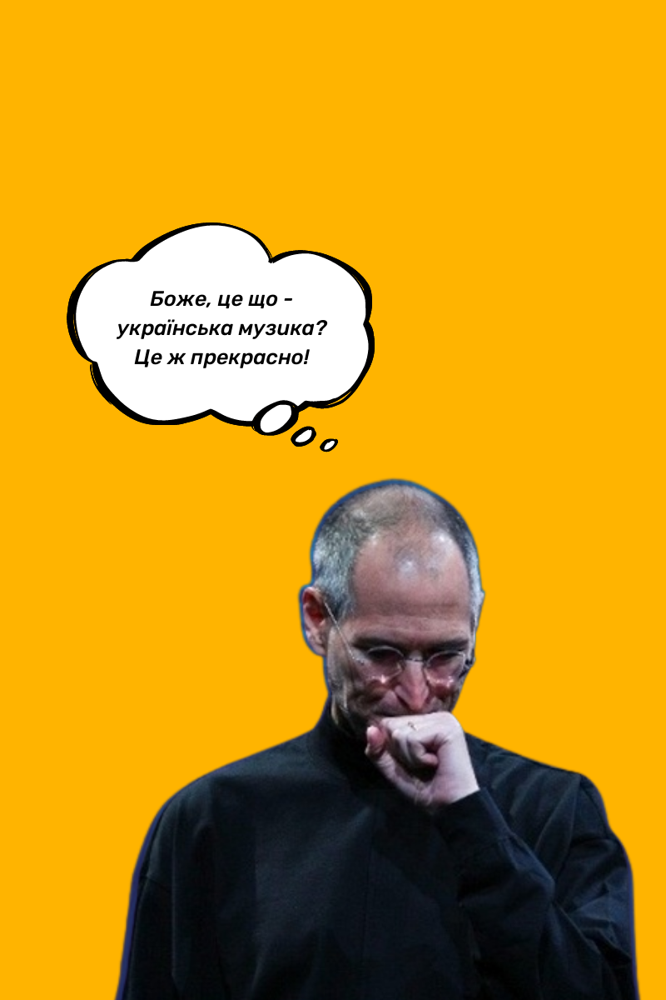

Вступ
Та варто визнати: цілковито позбутися вливу росії на українську культуру не вдалося. А справжнє усвідомлення проблеми прийшло до українців із початком повномасштабної війни, яка чи не в усіх стерла уявлення про "хороших руських", споживати контент яких - норма. Тож нині кожен свідомий громадянин намагається відмовлятися не лише від товарів із рф, а й інформаційних продуктів: музики, відеоконтенту, додатків і платформ. Адже навіть така, здавалося б, безневинна дія, як послухати пісню Валерія Меладзе - убиває. Кошти, отримані музикантами чи блогерами з росії, підуть на податки, що так само підуть на купівлю зброї проти українців.
Аби допомогти вам позбутися російського контенту в Інтернеті, "18000" спільно з ІТ компанією Master of Code Global створили покроковий гайд, що допоможе перевчити алгоритми Google Chrome, соціальних мереж, музичних та відеоплатформ видавати вам український контент.
Повний перехід на українські запити
Для того щоб налаштувати Google-пошук на головній сторінці, необхідно:
- клікнути по іконці з вашим зображенням та вибрати пункт "Керувати обліковим записом Google"
- переходимо на вкладку "Особиста інформація"
- знаходимо пункт "Загальні налаштування в Інтернеті"
- у пункті "Мова" шукаємо російську та натискаємо "Видалити"
"Лагідна українізація"
"Лагідна Українізація" - налаштування для браузера, що дозволяє збільшити частку української мови в Google, Facebook, LinkedIn та Wikipedia.
Додати до Chrome можна тут.
Як налаштувати алгоритми Spotify на український контент
- Розширте свій плейлист.
- За допомогою функції "Доповнити" ви можете додавати українську музику до створених плейлистів, які відповідають вашим музичним уподобанням. Вам залишається лише прослухати запропоноване системою Spotify й обрати те, що сподобалося.
- Знаходьте пісню за уривком слів
- Наприклад, якщо ви забули назву й виконавця треку, який хочете послухати, варто ввести декілька слів із цієї пісні і Spotify запропонує вам варіанти, у яких такі слова трапляються. Із часом алгоритми Spotify підлаштуються під ваші музичні вподобання та будуть пропонувати вам релевантний контент від українських виконавців.
Shame Voices
Це додаток, створений українським розробником Олександром Кожокарем. Застосунок дозволяє перевірити збережені треки в Spotify і Deezerта легко видалити пісні проросійських виконавців чи музикантів, які не зробили жодної заяви щодо російсько-української війни.
Для цього потрібно:
- залогінитися на сайті через свій обліковий запис у Spotify;
- обрати треки та підтвердити видалення;
- далі у вашому акаунті не залишиться й сліду виконавців, які підтримують війну.
Також на Shame Voicesможна переглянути перелік проросійських виконавців та докази щодо їхньої підтримки окупаційної влади.
Як налаштувати алгоритми Apple Music
Із березня на головній сторінці Apple Music почали зникати альбоми та пісні російських виконавців. Натомість користувачам пропонують добірки з українською музикою різних жанрів.
Водночас для того, щоб тримати свій музичний простір чистим від російського контенту, потрібно:
- відписатися від усіх російських виконавців та подкастів;
- видалити альбоми, які містять російський музичний контент;
- у музичних підбірках позначати дизлайком російську творчість;
- під час реєстрації на платформі, вона запропонує вам обрати виконавців: уникайте там російських артистів.
Youtube
Від чого залежить контент, який ви бачите в YouTube? При відображенні контенту на сторінці рекомендацій алгоритми враховують:
- канали, на які ви підписані;
- історія переглянутих відео;
- історія пошуку на платформі та в Google;
- також можуть вплинути трендові відео в вашому регіоні або час публікації.
Як бачимо, саме ваша поведінка на платформі YouTube формує в результаті те, що ви бачите в рекомендаціях. Однак є два основні шляхи, як позбутися російськомовного контенту з вашої стрічки рекомендацій.
Як позбутися російськомовного контенту в YouTube:
Спосіб 1
"Перевчити" вашу стрічку рекомендацій, направляючи сигнали алгоритмам YouTube, що вас більше не цікавить російськомовний контент. Для цього потрібно відписатися від всіх російськомовних каналів, якщо ви досі були на них підписані. У випадку потрапляння небажаного відео на головну сторінку варто натиснути на три крапки під відео та обрати "Not interested" (Не цікавить), або одразу відмітити, що всі відео з цього каналу для вас не є цікавими і обрати варіант "Don't recommend channel" (Не рекомендувати канал). Окрім того, можна подати сигнали алгоритмам, видаливши російськомовні відео з історії. Зробити це можна не для всіх відео, а для більшості переглянутих за останні місяці.
Спосіб 2
Повністю "очиститися" для алгоритму YouTube. Без історії ваших переглядів та запитів YouTube буде заново навчатись, що саме вам показувати. Щоб це зробити необхідно:
- клікнути на іконку з вашим зображенням в правому верхньому боці вікна;
- у меню обрати "Ваші дані на YouTube";
- на сторінці знайти пункт "Історія пошуку YouTube";
- обрати варіант "Керувати історією пошуку YouTube";
- на сторінці "Історія YouTube" клікнути на кнопку "Видалити" та у меню, що вам показується, обрати пункт "Видалити всі дії";
- підтвердити дії, натиснувши кнопку "Видалити".